Atomic functions overview
The follow document lists the atomic plotting functions and their usage. These are the most atomic primitives which one can stack together to form more complex plots.
For general help about each function, consult the Help functions.
See Plot function signatures for the available plot function signatures.
See Plot attributes for the available plot attributes.
heatmap
AbstractPlotting.heatmap — Function.`heatmap(x, y, values)` or `heatmap(values)`Plots a heatmap as an image on x, y (defaults to interpretation as dimensions).
Available attributes and their defaults for Heatmap{...} are:
alpha 1.0
color :black
colormap :viridis
colorrange AbstractPlotting.Automatic()
interpolate false
levels 1
linewidth 0.0
overdraw false
transparency false
visible true
image
AbstractPlotting.image — Function.`image(x, y, image)` / `image(image)`Plots an image on range x, y (defaults to dimensions).
Available attributes and their defaults for Image{...} are:
alpha 1.0
color :black
colormap ColorTypes.RGBA{Float32}[RGBA{Float32}(0.0,0.0,0.0,1.0), RGBA{Float32}(1.0,1.0,1.0,1.0)]
colorrange AbstractPlotting.Automatic()
linewidth 1
overdraw false
transparency false
visible true
lines
AbstractPlotting.lines — Function.`lines(x, y, z)` / `lines(x, y)` / or `lines(positions)`Creates a connected line plot for each element in (x, y, z), (x, y) or positions.
Available attributes and their defaults for Lines{...} are:
alpha 1.0
color :black
colormap :viridis
colorrange AbstractPlotting.Automatic()
linestyle nothing
linewidth 1.0
overdraw false
transparency false
visible true
 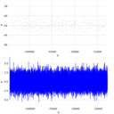
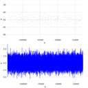  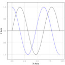 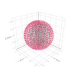 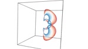 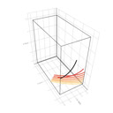 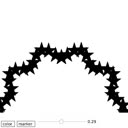
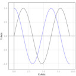 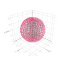 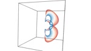 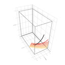 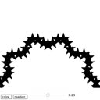  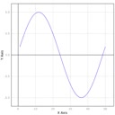
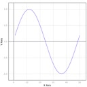
Step 1
Step 2
Step 3
Step 4
Step 5
Step 6
Step 7
Step 8
Step 9
Step 10
Step 11
Step 12
linesegments
AbstractPlotting.linesegments — Function.`linesegments(x, y, z)` / `linesegments(x, y)` / `linesegments(positions)`Plots a line for each pair of points in (x, y, z), (x, y), or positions.
Attributes: The same as for lines
Available attributes and their defaults for LineSegments{...} are:
alpha 1.0
color :black
colormap :viridis
colorrange AbstractPlotting.Automatic()
linestyle nothing
linewidth 1.0
overdraw false
transparency false
visible truemesh
AbstractPlotting.mesh — Function.`mesh(x, y, z)`, `mesh(mesh_object)`, `mesh(x, y, z, faces)`, or `mesh(xyz, faces)`Plots a 3D mesh.
Available attributes and their defaults for Mesh{...} are:
alpha 1.0
color :black
colormap :viridis
colorrange AbstractPlotting.Automatic()
interpolate false
linewidth 1
overdraw false
shading true
transparency false
visible true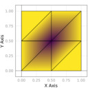 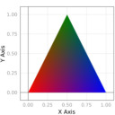 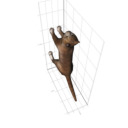 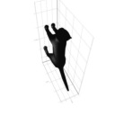 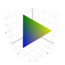 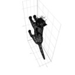 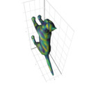  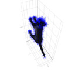 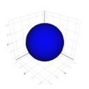 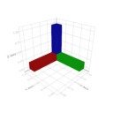
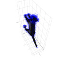 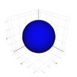 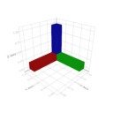
meshscatter
AbstractPlotting.meshscatter — Function.`meshscatter(x, y, z)` / `meshscatter(x, y)` / `meshscatter(positions)`Plots a mesh for each element in (x, y, z), (x, y), or positions (similar to scatter). markersize is a scaling applied to the primitive passed as marker
Available attributes and their defaults for MeshScatter{...} are:
alpha 1.0
color :black
colormap :viridis
colorrange AbstractPlotting.Automatic()
linewidth 1
marker GeometryTypes.HyperSphere{3,Float32}(Float32[0.0, 0.0, 0.0], 1.0f0)
markersize 0.1
overdraw false
rotations 1.0 + 0.0im + 0.0jm + 0.0km
transparency false
visible true


scatter
AbstractPlotting.scatter — Function.`scatter(x, y, z)` / `scatter(x, y)` / `scatter(positions)`Plots a marker for each element in (x, y, z), (x, y), or positions.
Available attributes and their defaults for Scatter{...} are:
alpha 1.0
color :black
colormap :viridis
colorrange AbstractPlotting.Automatic()
distancefield nothing
glowcolor RGBA{N0f8}(0.0,0.0,0.0,0.0)
glowwidth 0.0
linewidth 1
marker GeometryTypes.HyperSphere{2,T} where T
marker_offset AbstractPlotting.Automatic()
markersize 0.1
overdraw false
rotations Billboard()
strokecolor RGBA{N0f8}(0.0,0.0,0.0,0.0)
strokewidth 0.0
transform_marker false
transparency false
uv_offset_width Float32[0.0, 0.0, 0.0, 0.0]
visible true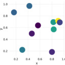 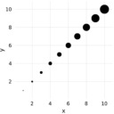 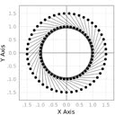 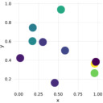 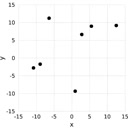  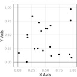 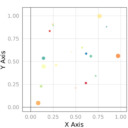
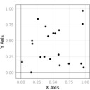 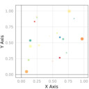 
 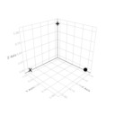
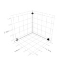 
 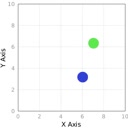 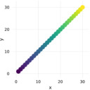 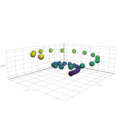 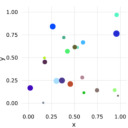 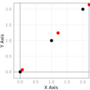
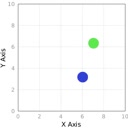 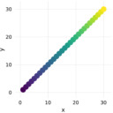 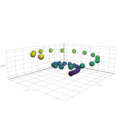 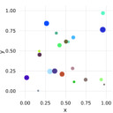 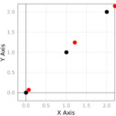 
surface
AbstractPlotting.surface — Function.`surface(x, y, z)`Plots a surface, where (x, y, z) are supposed to lie on a grid.
Available attributes and their defaults for Surface{...} are:
alpha 1.0
color :black
colormap :viridis
colorrange AbstractPlotting.Automatic()
linewidth 1
overdraw false
shading true
transparency false
visible true
text
AbstractPlotting.text — Function.`text(string)`Plots a text.
Available attributes and their defaults for Text{...} are:
align (:left, :bottom)
alpha 1.0
color :black
font "Dejavu Sans"
linewidth 1
overdraw false
position Float32[0.0, 0.0]
rotation 0.0
strokecolor (:black, 0.0)
strokewidth 0
textsize 20
transparency false
visible true
Step 1
" />
Step 2
" />
Step 3
" />
volume
AbstractPlotting.volume — Function.`volume(volume_data)`Plots a volume. Available algorithms are:
:iso=> IsoValue:absorption=> Absorption:mip=> MaximumIntensityProjection:absorptionrgba=> AbsorptionRGBA:indexedabsorption=> IndexedAbsorptionRGBA
Available attributes and their defaults for Volume{...} are:
absorption 1.0f0
algorithm :iso
alpha 1.0
color :black
colormap :viridis
colorrange (0, 1)
isorange 0.05f0
isovalue 0.5f0
linewidth 1
overdraw false
transparency false
visible true
contour
Makie.contour — Function.contour(x, y, z)Creates a contour plot of the plane spanning x::Vector, y::Vector, z::Matrix
Available attributes and their defaults for Contour{...} are:
alpha 1.0
color :viridis
colorrange AbstractPlotting.Automatic()
fillrange false
levels 5
linewidth 1.0
overdraw false
transparency false
visible true
arrows
AbstractPlotting.arrows — Function.AbstractPlotting.arrows(args...; attributes...)Command works on plot args 1:N and accepts keyword arguments to style the plot. Creates a new scene!
AbstractPlotting.arrows(attributes::Attributes, args...; attributes...)Like AbstractPlotting.arrows(args...; attributes...) but accepts a theme as first argument. Creates a new scene!
Available attributes and their defaults for Arrows{...} are:
arrowcolor :black
arrowhead AbstractPlotting.Automatic()
arrowsize 0.3
arrowtail nothing
lengthscale 1.0f0
linecolor :black
linestyle nothing
linewidth 1
normalize false
scale Float32[1.0, 1.0, 1.0]barplot
AbstractPlotting.barplot — Function.AbstractPlotting.barplot(args...; attributes...)Command works on plot args 1:N and accepts keyword arguments to style the plot. Creates a new scene!
AbstractPlotting.barplot(attributes::Attributes, args...; attributes...)Like AbstractPlotting.barplot(args...; attributes...) but accepts a theme as first argument. Creates a new scene!
Available attributes and their defaults for BarPlot{...} are:
color :black
colormap :viridis
colorrange AbstractPlotting.Automatic()
fillto 0.0
marker GeometryTypes.HyperRectangle
width nothing

poly
AbstractPlotting.poly — Function.AbstractPlotting.poly(args...; attributes...)Command works on plot args 1:N and accepts keyword arguments to style the plot. Creates a new scene!
AbstractPlotting.poly(attributes::Attributes, args...; attributes...)Like AbstractPlotting.poly(args...; attributes...) but accepts a theme as first argument. Creates a new scene!
Available attributes and their defaults for Poly{...} are:
color :black
colormap :viridis
colorrange AbstractPlotting.Automatic()
linestyle nothing
strokecolor RGBA{Float32}(0.0f0,0.0f0,0.0f0,0.0f0)
strokewidth 0.0
visible true

band
AbstractPlotting.band — Function.AbstractPlotting.band(args...; attributes...)Command works on plot args 1:N and accepts keyword arguments to style the plot. Creates a new scene!
AbstractPlotting.band(attributes::Attributes, args...; attributes...)Like AbstractPlotting.band(args...; attributes...) but accepts a theme as first argument. Creates a new scene!
Available attributes and their defaults for Band{...} are:
alpha 1.0
color RGBA{Float32}(1.0f0,0.0f0,0.0f0,0.2f0)
colormap :viridis
colorrange AbstractPlotting.Automatic()
interpolate false
linewidth 1
overdraw false
shading true
transparency false
visible true
slider
AbstractPlotting.slider — Function.AbstractPlotting.slider(args...; attributes...)Command works on plot args 1:N and accepts keyword arguments to style the plot. Creates a new scene!
AbstractPlotting.slider(attributes::Attributes, args...; attributes...)Like AbstractPlotting.slider(args...; attributes...) but accepts a theme as first argument. Creates a new scene!
Available attributes and their defaults for Slider{...} are:
backgroundcolor (:gray, 0.01)
buttoncolor :white
buttonsize 15
buttonstroke 1.5
buttonstrokecolor :black
position (0, 0)
slidercolor (:gray, 0.6)
sliderheight 50
sliderlength 200
start AbstractPlotting.Automatic()
strokecolor (:black, 0.4)
strokewidth 1
textcolor :black
textsize 15
value 0
valueprinter AbstractPlotting.default_printer 
vbox
vboxAvailable attributes and their defaults for Combined{AbstractPlotting.vbox,T} where T are: